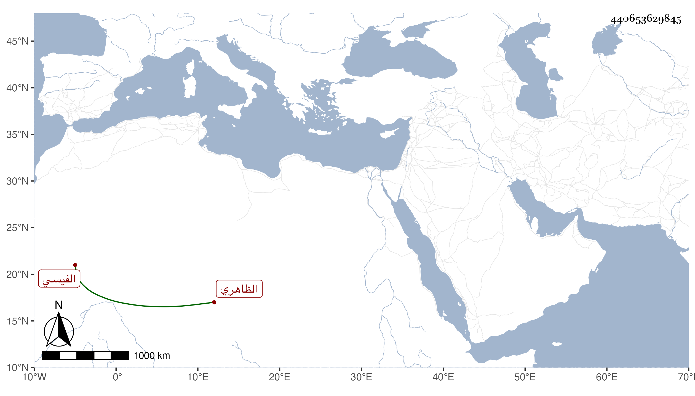

0902Sakhawi.DawLamic.ITO20230111-ara1.EIS1600.440653629845
Biography ID: 440653629845
797
كمشبغا الفيسي بالفاء والمهملة الظاهري برقوق . ممن ترقى في أيام الناصر فرج إلى أن صار مقدما ثم في جمادى الأولى سنة عشر أمير آخور كبير ثم أمسكه المؤيد وحبسه مدة ثم أطلقه وتخومل بحيث كان في أيام الأشرف من أمراء العشرات ثم ولاه كشف الوجه البحري ، واشتهر بالظلم والعسف إلى أن عزل على أقبح وجه وعقد له مجالس بسبب سفك الدماء ثم آل أمره إلى أن خرج للبلاد الشامية على أقطاع هين حتى مات هناك في ربيع الآخر سنة ثلاث وثلاثين وقد ناهز الثمانين وذكره شيخنا في إنبائه وقال : كان جريئا على سفك الدماء ووصفه بالكاشف زاد غيره المزوق الظاهري .
